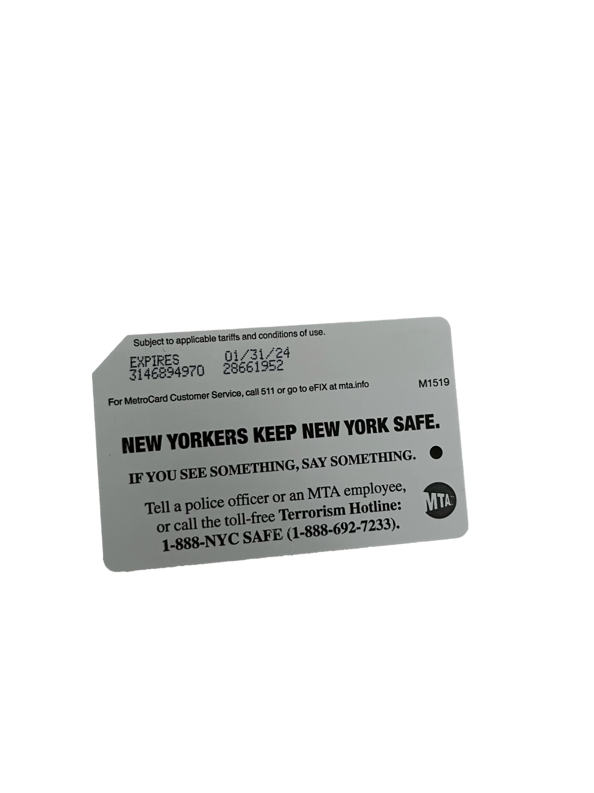
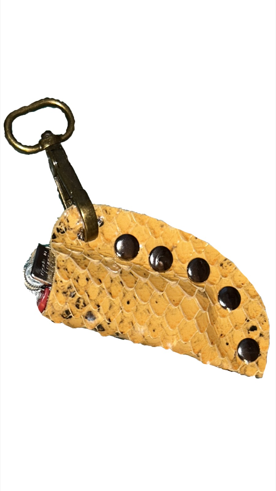
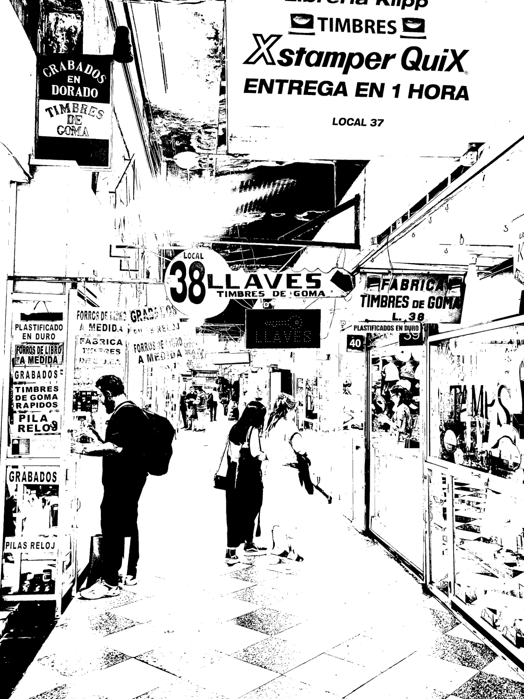
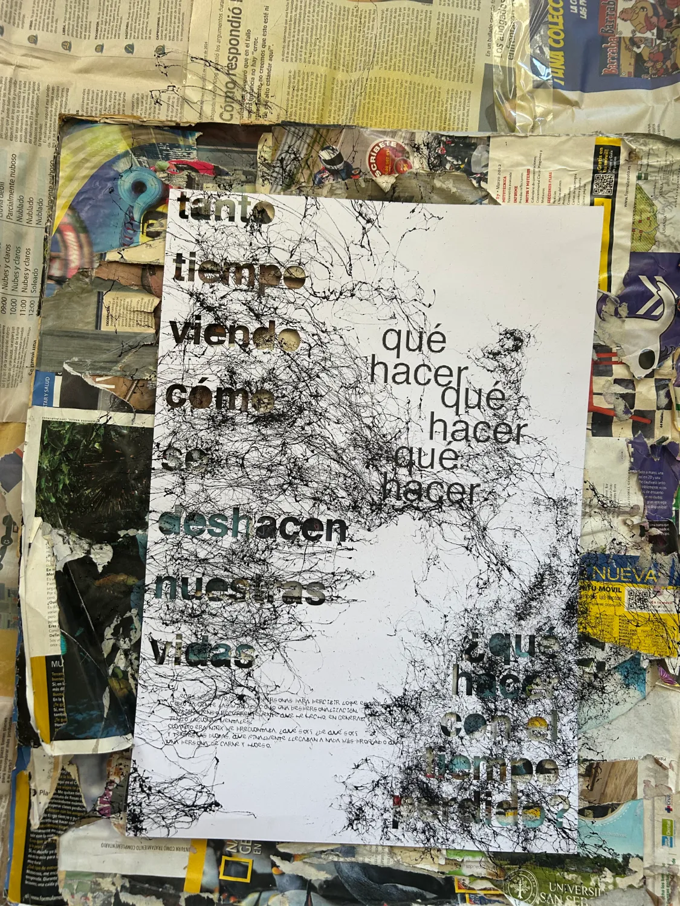

Portaencendedor.

Sofíe Matus
Estudiante de diseño gráfico y previamente de artes visuales (sólo por un año), lo cual marcó inmensamente en mi proceso creativo y visión del mundo.
Interés por lo hecho a mano como también lo digital, pero en específico, lo que tiene proceso y error.
Concepción/Santiago, Chile.

sof.me⭒concepto visual